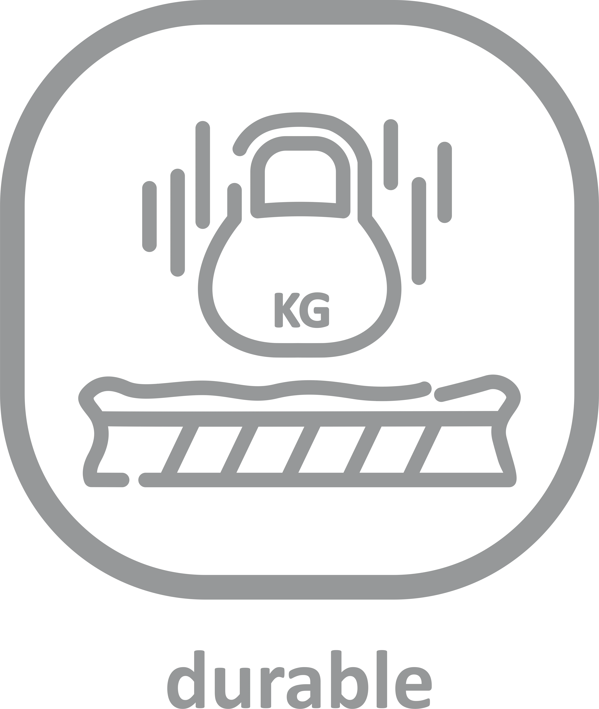
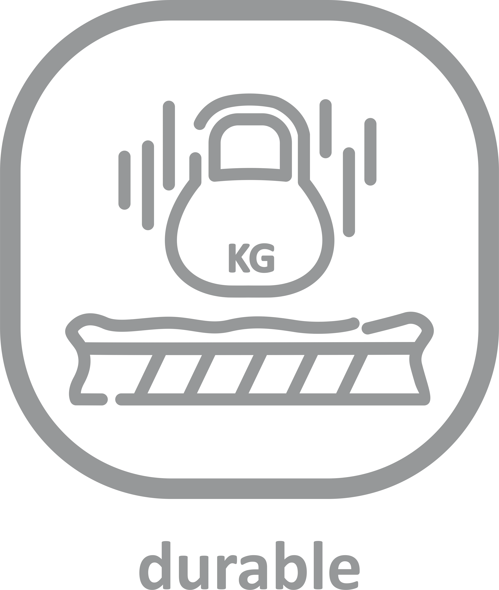

Unleash your potential on the rugby field with our advanced TS Li-Tech rugby fabric. Engineered for elite performance, our cutting edge fabric combines elasticity, durability, and breathability to elevate your game. The quick-drying fabric ensures you stay comfortable and dry, even in the most intense matches. Built to withstand the rigors of rugby, TS Li-Tech fabric is as tough and resilient as you are.
Whether you're scrumming down or making that game-winning tackle, trust TS Li-Tech fabric to deliver the performance you need to succeed. Explore our range today and dominate the field with confidence.
 
